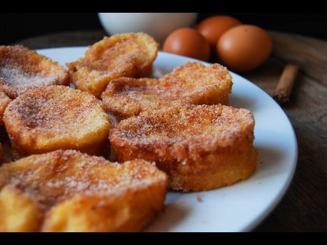

Torrijas españolas
A continuacion te dejamos la receta para preparar unas exquisitas torrijas a la española
Ingredientes
- Una tira de pan (preferentemente de un dia o dos)
- Dos Huevos
- Una taza y media de leche
- Un cuarto de taza de azucar
- Ramitas de canela (opcional)
- Rayadura de un limon (opcional)
- Aceite para freir c/n
Preparacion
- Cortar el pan en rodajas
- En un boul mezclar la leche con el azucar y los huevos (opcional agregar la rayadura de limon)
- Remojar las rodajas de pan en la preparacion, dejarlas remojando hasta que queden blandas
- Freir en aceite a fuego medio hasta que tengan un color dorado
- Espolvorear con un poco de azuar


